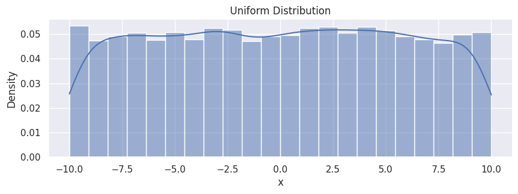
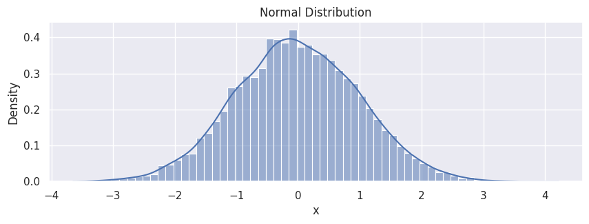
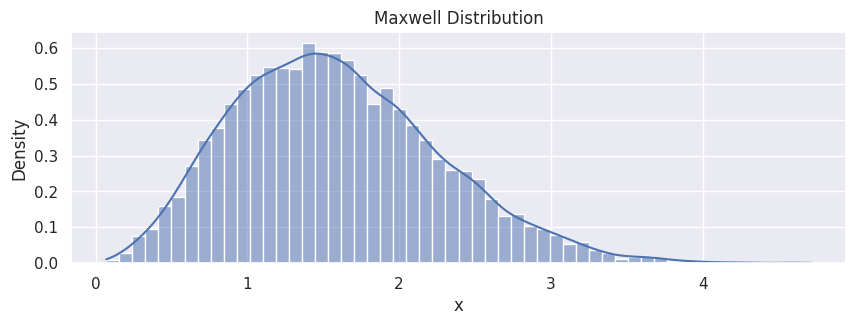
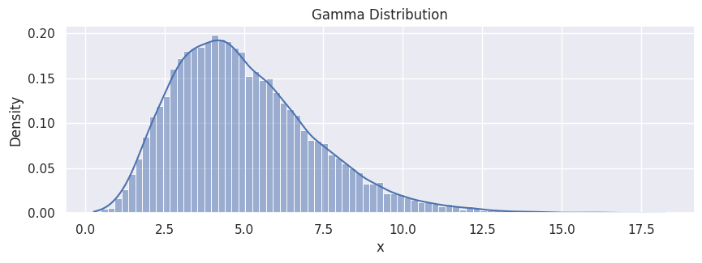
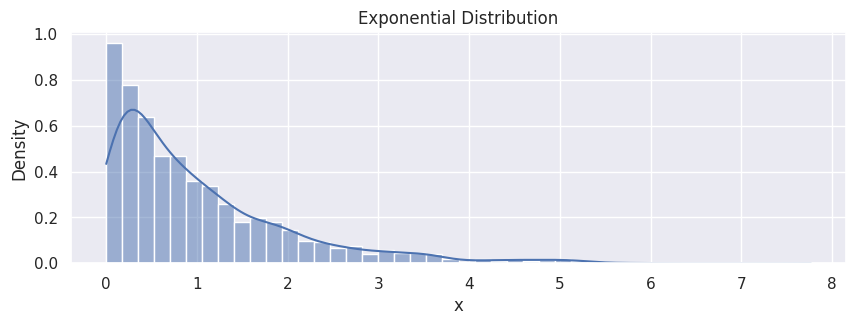
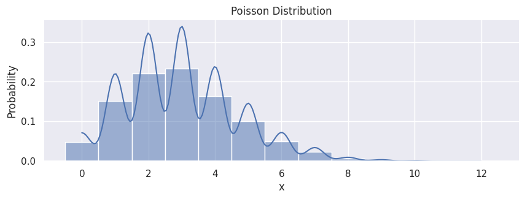
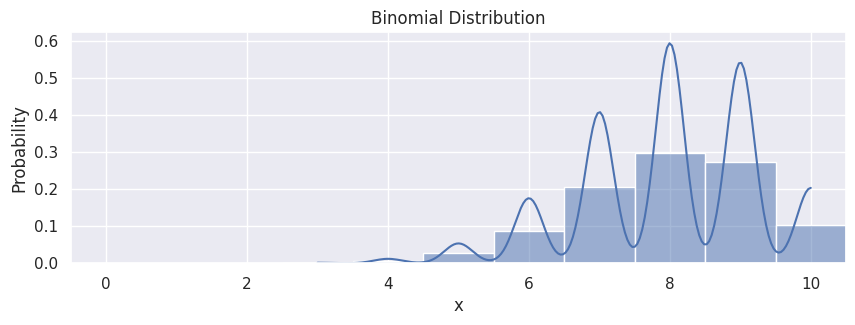
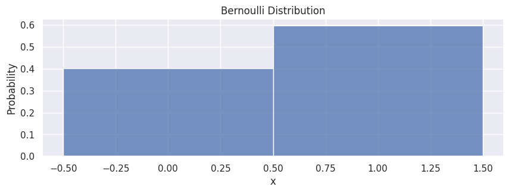

Introduction to General Distribution Functions#
Python contains many available ingredients for us to play with distributions. We use numpy, scipy, pandas, and seaborn in this introduction section. Note that the random number sampling can be done both in numpy and scipy, but we recommend using Generators from numpy if possible. seaborn is a nice visualization package for statistics built upon matplotlib. We wrap the samples using dataframes from pandas for direct access when plotting.
import numpy as np
import pandas as pd
import seaborn as sns
sns.set_theme(rc={'figure.figsize':(10,3)})
# For reproducibility
seed = 1234
rng = np.random.default_rng(seed)
Uniform Distribution#
# random numbers from uniform distribution
data_uniform = rng.uniform(-10, 10, size=10000)
df_uniform = pd.DataFrame(data_uniform, columns=["x"])
hp = sns.histplot(df_uniform,
x="x",
stat="density",
kde=True
)
hp.set(title="Uniform Distribution");

Normal Distribution#
The normal distribution, or Maxwellian distribution, is the most used distribution in a wide range of applications.
# generate random numbers from N(0,1)
data_normal = rng.normal(0, 1, size=10000)
df_normal = pd.DataFrame(data_normal, columns=["x"])
hp = sns.histplot(df_normal,
x="x",
stat="density",
kde=True
)
hp.set(title="Normal Distribution");

Referring to the Maxwell-Boltzmann distribution, the Maxwell–Boltzmann distribution applies fundamentally to particle velocities in three dimensions, but turns out to depend only on the speed (the magnitude of the velocity) of the particles. A particle speed probability distribution indicates which speeds are more likely: a randomly chosen particle will have a speed selected randomly from the distribution, and is more likely to be within one range of speeds than another.
The probability of the thermal-equilibrium speed can be directly computed from scipy:
import scipy.stats as stats
data_maxwell = stats.maxwell.rvs(size=10000, scale=1)
df_maxwell = pd.DataFrame(data_maxwell, columns=["x"])
hp = sns.histplot(df_maxwell,
x="x",
stat="density",
kde=True
)
hp.set(title="Maxwell Distribution");

Gamma Distribution#
The gamma distribution is a two-parameter family of continuous probability distributions. While it is used rarely in its raw form but other popularly used distributions like exponential, chi-squared, erlang distributions are special cases of the gamma distribution. The gamma distribution can be parameterized in terms of a shape parameter \(\alpha = k\) and an inverse scale parameter \(\beta = 1/\theta\), called a rate parameter, the symbol \(\Gamma(n)\) is the gamma function and is defined as \((n-1)!\):
data_gamma = rng.gamma(5, size=20000)
df_gamma = pd.DataFrame(data_gamma, columns=["x"])
hp = sns.histplot(df_gamma,
x="x",
stat="density",
kde=True
)
hp.set(title="Gamma Distribution");

Exponential Distribution#
The exponential distribution describes the time between events in a Poisson point process, i.e., a process in which events occur continuously and independently at a constant average rate. It has a parameter \(\lambda\) called rate parameter, and its equation is described as:
data_expon = rng.exponential(1, size=2000)
df_expon = pd.DataFrame(data_expon, columns=["x"])
hp = sns.histplot(df_expon,
x="x",
stat="density",
kde=True
)
hp.set(title="Exponential Distribution");

Poisson Distribution#
Poisson random variable is typically used to model the number of times an event happened in a time interval. For example, the number of users visited on a website in an interval can be thought of a Poisson process. Poisson distribution is described in terms of the rate (\(\mu\)) at which the events happen. An event can occur 0, 1, 2, … times in an interval. The average number of events in an interval is designated \(\lambda\). Lambda is the event rate, also called the rate parameter. The probability of observing \(k\) events in an interval is given by the equation:
Note: the normal distribution is a limiting case of Poisson distribution with the parameter \(\lambda\rightarrow\infty\). Also, if the times between random events follow an exponential distribution with rate \(\lambda\), then the total number of events in a time period of length \(t\) follows the Poisson distribution with parameter \(\lambda t\).
data_poisson = rng.poisson(3, size=10000)
df_poisson = pd.DataFrame(data_poisson, columns=["x"])
hp = sns.histplot(df_poisson,
x="x",
stat="probability",
kde=True,
discrete=True
)
hp.set(title="Poisson Distribution");

Binomial Distribution#
A distribution where only two outcomes are possible, such as success or failure, gain or loss, win or lose and where the probability of success and failure is same for all the trials is called a Binomial Distribution. However, The outcomes need not be equally likely, and each trial is independent of each other. The parameters of a binomial distribution are \(n\) and \(p\) where \(n\) is the total number of trials, and \(p\) is the probability of success in each trial. Its probability distribution function is given by
where
Note: since the probability of success was greater than 0.5 the distribution is skewed towards the right side. Also, poisson distribution is a limiting case of a binomial distribution under the following conditions:
The number of trials is indefinitely large, \(n \rightarrow \infty\).
The probability of success for each trial is same and indefinitely small, \(p\rightarrow 0\).
\(np = \lambda\), is finite.
Normal distribution is another limiting form of binomial distribution under the following conditions:
The number of trials is indefinitely large, \(n \rightarrow \infty\).
Both \(p\) and \(q\) are not indefinitely small.
data_binom = rng.binomial(n=10, p=0.8, size=10000)
df_binom = pd.DataFrame(data_binom, columns=["x"])
hp = sns.histplot(df_binom,
x="x",
stat="probability",
kde=True,
discrete=True
)
hp.set(title="Binomial Distribution");
hp.set_xlim(-0.5, 10.5)
(-0.5, 10.5)

Bernoulli Distribution#
A Bernoulli distribution has only two possible outcomes, namely 1 (success) and 0 (failure), and a single trial, for example, a coin toss. So the random variable \(X\) which has a Bernoulli distribution can take value 1 with the probability of success, \(p\), and the value 0 with the probability of failure, \(q\) or \(1-p\). The probabilities of success and failure need not be equally likely. The Bernoulli distribution is a special case of the binomial distribution where a single trial is conducted (\(n=1\)). Its probability mass function is given by:
data_bern = rng.binomial(n=1, p=0.6, size=10000)
df_bern = pd.DataFrame(data_bern, columns=["x"])
hp = sns.histplot(df_bern,
x="x",
stat="probability",
discrete=True
)
hp.set(title="Bernoulli Distribution");
